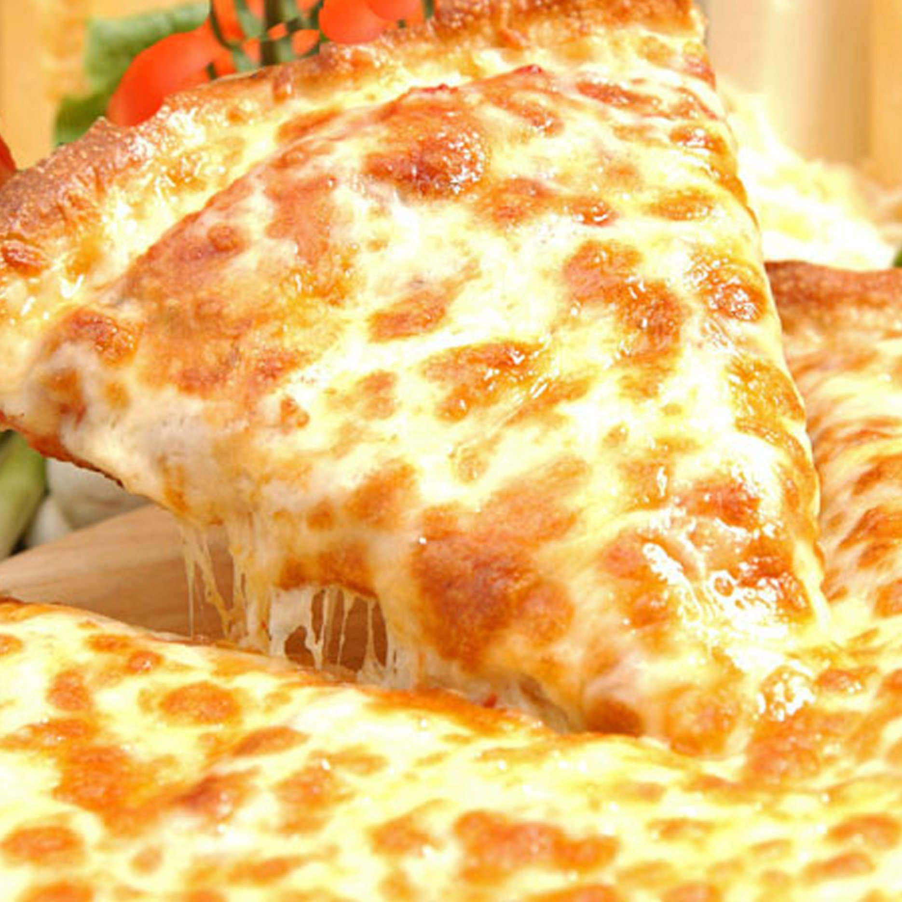

Pizza Recipe

Here is a summary of a cheese pizza recipe:
- To make the dough, mix together 7g of yeast and 1 tsp of sugar with 250ml of warm water and leave
for 10 minutes. Then add 400g of flour and 2 tbsp of olive oil and knead to a smooth dough. Leave to
rise for an hour or until doubled in size.
- To make the sauce, heat some oil in a pan and cook a chopped onion and garlic clove until soft.
Then add a can of chopped tomatoes, some oregano, salt and pepper and simmer for 15 minutes or
until thickened.
- To assemble the pizza, divide the dough into two balls and roll out each one on a floured surface.
Place them on baking sheets and spread some sauce over them. Sprinkle with grated mozzarella
cheese and sliced cherry tomatoes. Drizzle with some more olive oil and season with salt
and pepper.
- Bake the pizzas in a preheated oven at 240°C/220°C fan/gas mark 8 for 8 to 10 minutes or until
crisp and golden.
Enjoy your cheese pizza! 🍕